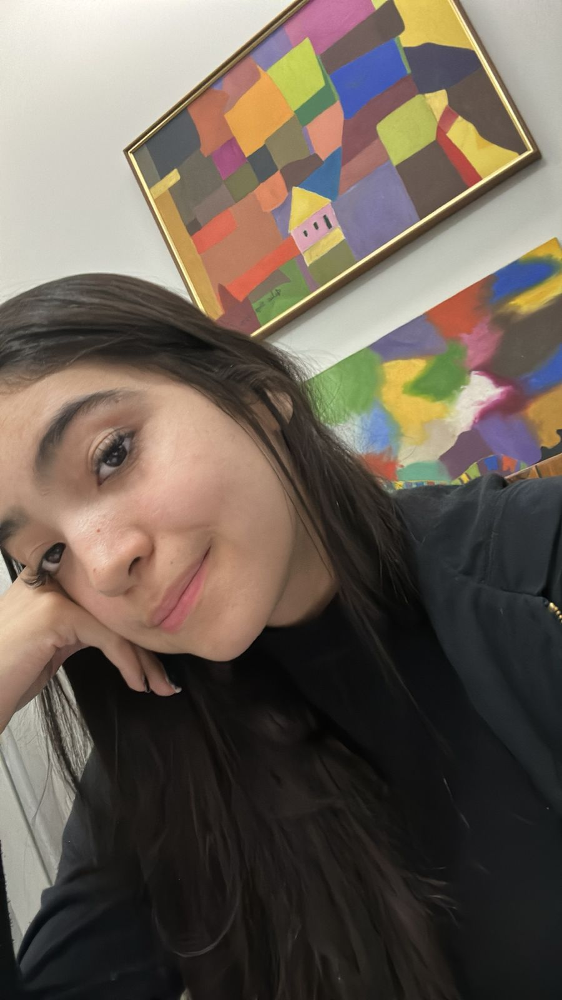

Site da Chinesa!
A Advogata Criminalista
Quem é Julia Borges?
Julia Borges, também conhecida como Juju, Ju, Chinesinha ou Chinesa, é uma menina incrível, inteligente, linda, com bom gosto musical(obrigado por me mostrar innerbloom), com um ótimo gosto para conversantes, afinal ela passa muito tempo conversando comigo, realmente um bom gosto invejável.
A Julia é uma pessoa boa, que pode parecer meio chatinha que julga os inferiores kkkk, mas no fundo ela é uma pessoa boa, ela quer fazer até uma tatuagem de anime (Gente como a gente), ela ainda por cima é talentosa, Julia de 12 anos desenhava quadros lindos, que inclusive foram até emoldurados, da pra ver ali embaixo!!!!!
A Julia é muito especial, percebo que fico feliz só de estar do lado dela, e que o simples fato de conversar com ela já faz o meu dia melhorar, ela é uma pessoa muito incrível, e fico muito feliz por ela ter entrado na minha vida.
Para deixar a página inicial mais linda, vou deixar a foto da obra de arte com os quadros do lado!!
Clique para ver algumas curiosidades sobre Julia Borges:
Ver Curiosidades